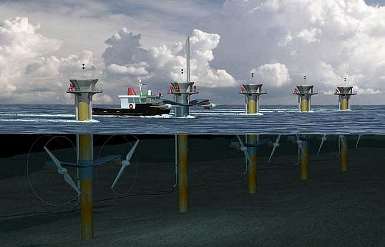

ENERGY FOREVER
ENERGIA MAREMOTRIZ
Energia das marés, ou energia maremotriz, é a tecnologia para converter a energia das marés em formas úteis de energia, essa energia é gerada por meio do “desnível” das águas do mar provocando pelo fenômeno das marés.

Ela é considerada uma fonte de energialimpa e sustentável, pois é gerada a partir de uma fonte natural e renovável. Para gerar energia, as marés são influenciadas principalmente pela atração gravitacional da lua e do sol sobre o planeta Terra. Porém, no entanto, a viabilidade econômica e ambiental dos projetos pode depender das características específicas do local aonde foi escolhido para a instalação.
COMO FUNCIONA
Existem diferentes métodos para se capturar a energia das marés, sendo eles as usinas maremotrizes uma das abordagens mais comuns, aonde são utilizadas turbinas de corrente de marés, essas turbinas são instaladas no fundo do mar ou em áreas de alta correnteza.

Elas capturam energia cinética do fluxo dos mares, funcionando de maneira semelhante às turbinas eólicas porém submersas. Essas usinas maremotrizes são geralmente instaladas em locais estratégicos aonde o movimento das marés é particularmente intenso. Estuários, baías e áreas mais costeiras com grande amplitudes de maré são escolhidos para maximizar a eficiência da geração de energia.